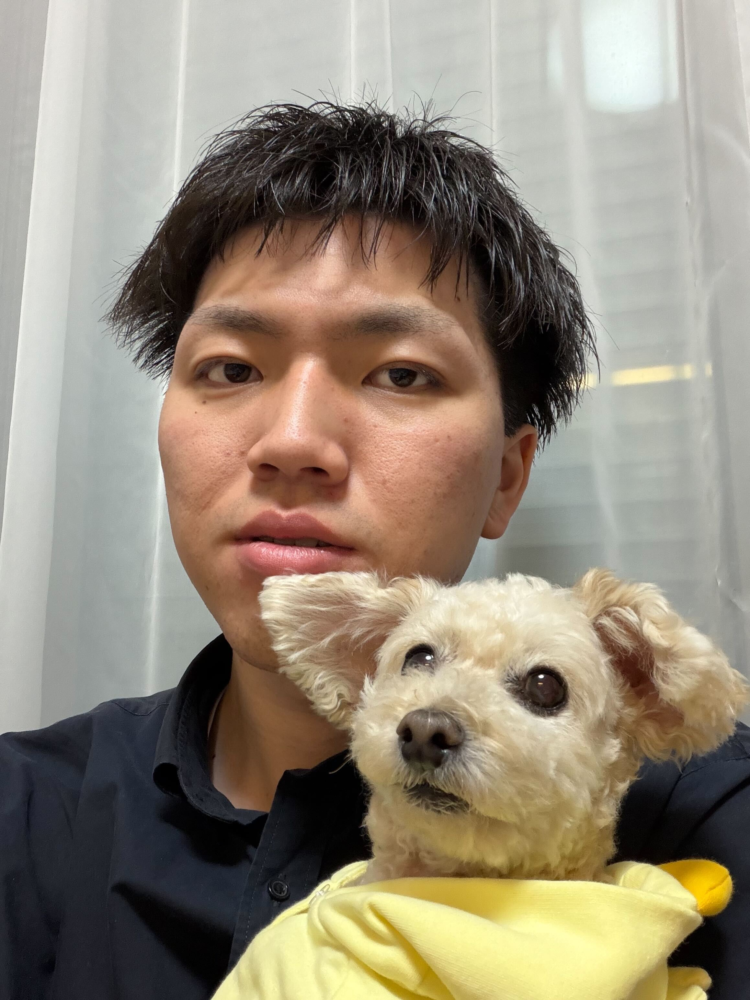

研究概要
「図形の証明学習における知識部品化を支援する学習支援システムの開発」
図形の証明学習では既習知識の適用判断や推論の連鎖構成が難しく，手順の暗記に陥ることで論理の飛躍が生じやすい．本研究では，図形の定義や性質を知識部品としてモデル化し，推論の各ステップに対応付けて可視化し，フィードバックする学習支援システムの開発を目的とする．
Graduate Student（M1）
研究キーワード：数学，学習支援，知識の構造化と再利用
数学学習における有用な学習手法の考案と，それらを実現するための学習支援システムの開発を行っています．

数学を題材とした学習支援を行っている理由としては，自身が数学科の教員を目指していた過去があるからです．数学は「難しい」「わからない」という感情が生まれやすく，1度躓いてしまうと立て直しづらい科目だと思います．難しい問題でも，「自分の知識で解けるんだ！」という気付きを与え，少しでも苦手意識を克服するための手助けができればと思いながら活動しています．
研究室外の活動として，塾講師をやっています．人に何かを教えたり，サポートすることが好きです．研究室内でも後輩指導により力を入れています．
「図形の証明学習における知識部品化を支援する学習支援システムの開発」
図形の証明学習では既習知識の適用判断や推論の連鎖構成が難しく，手順の暗記に陥ることで論理の飛躍が生じやすい．本研究では，図形の定義や性質を知識部品としてモデル化し，推論の各ステップに対応付けて可視化し，フィードバックする学習支援システムの開発を目的とする．
内山裕太, 古池謙人, 東本崇仁: "問題構造に基づく構造の部分的再利用を指向した学習支援システムの設計・提案", 人工知能学会第105回先進的学習科学と工学研究会（SIG-ALST）, pp.42-46, (2025/11)
Email：yuta0918.mugi.sub[at]gmail.com
GitHub：https://github.com/Spica-cit
Instagram：https://www.instagram.com/spica_65536